Anwendung von nichtlinearer Akustik für Ultraschall
Kolloquium
Christoph-Alexander Hermanns
Schall
Schall ist das Resultat einer sich durch ein Medium periodisch ausbreitenden Störung.
Die Störung wird durch die mechanische Verschiebung der Teilchen des Mediums verursacht.
Dieses Phänomen wird als Schallwelle charakterisiert.
Bewegung im Medium
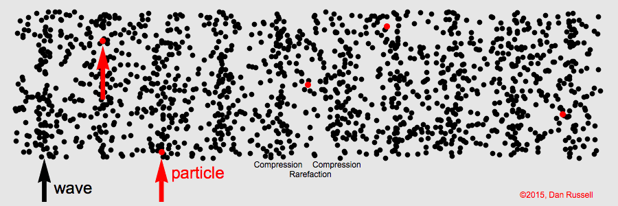
Oszillierende Bewegung
Schallwelle
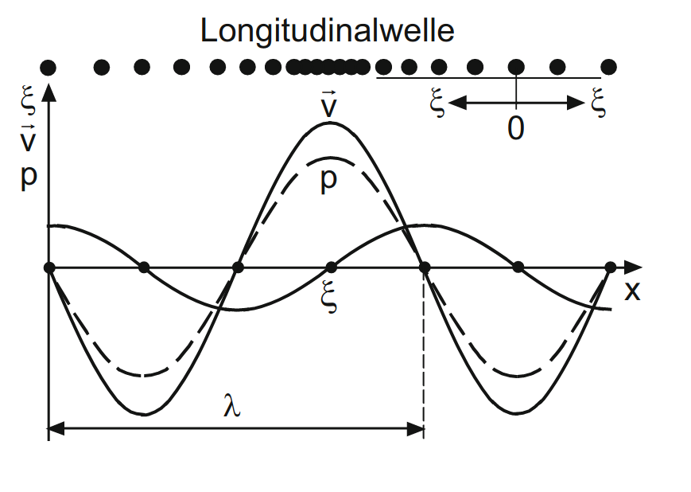
Schwingung: Frequenz, Amplitude
Amplitude: Maß der Stärke der Verschiebung
Frequenz: zeitliche Wiederholung der Bewegung
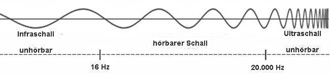
Abhängig von der Frequzenz wird Schall eingeteilt:
Infraschall:
unter 16 Hz: Waschmaschinen, Heizungen
Hörbarer Schall:
16 - 20 kHz: Sprache, Musik
Ultraschall:
über 16 kHz: Delfine, Feldermäuse - Echoortung
Kontinuität im Medium
Systemgrößen müssen bei Zustandsänderungen erhalten bleiben auch wenn lokale Änderungen stattfinden.
Bildung der Schallwelle im Raum
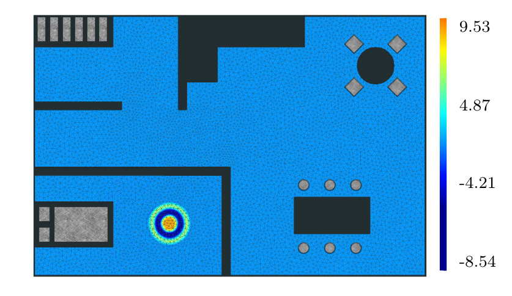
Ausbreitung der Schallwelle
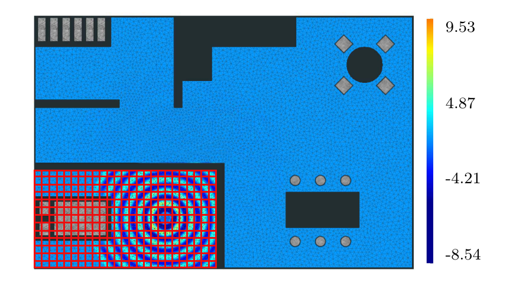
Lokale und zeitliche Änderungen spiegeln sich in den veränderlichen Systemgrößen
Dichte, Druck und Geschwindigkeit.
Über die Gesamtheit des Systems sind diese gleich 0 - Kontinuität bleibt erhalten.
Zustandsübergänge des Mediums
System besitzt Kompressibilität
Schalldruck ändert die Gleichgewichtsdichte, bzw. das Volumen.
Verlauf der Zustandsänderungen
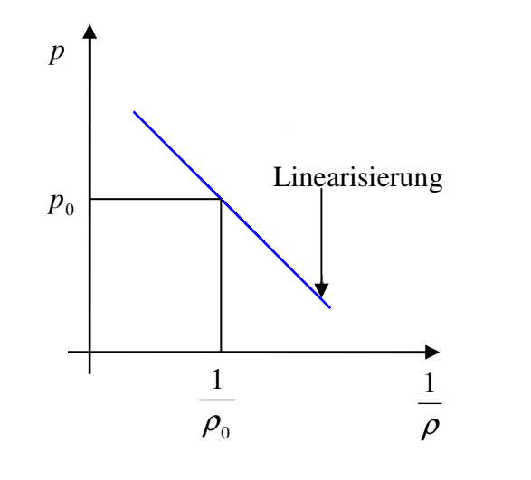
Aussagenmaß über Weitergabe von Schallwellen.
Schallgeschwindigkeit als Verhältnis zwischen Druck und Dichte bleibt konstant.
Kurzzusammenfassung
Bewegung im Medium
Kontinuität des Mediums
Zustände des Mediums
Technische Anwendung von Schall
Lautsprecher: Schall mit niedriger Frequenz.

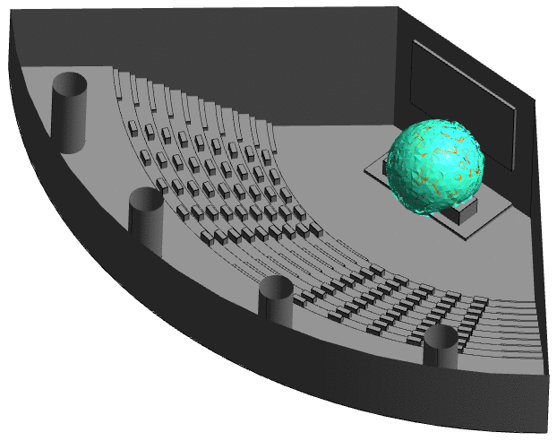
Die Ausbreitung von hörbaren Schall.
Lautsprecher - Richtcharakteristik
Änderung der Fläche
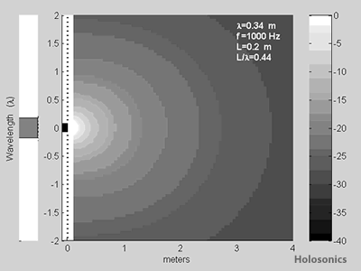
Änderung der Frequenz
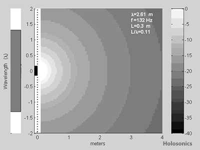
Schall hoher Frequenz

Ein Lautsprecher mit starker Richtcharakteristik.
Anwendungen mit Ultraschall
Besonderheit des Mediums
Starke Dämpfung in der Luft
Energiereicher (Ultra)Schall wird benötigt.
Übergänge der Zustände sind nichtlinear.
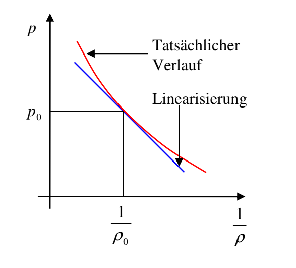
Nichtlinearer Verlauf ändert die Schallgeschwindigkeit lokal.
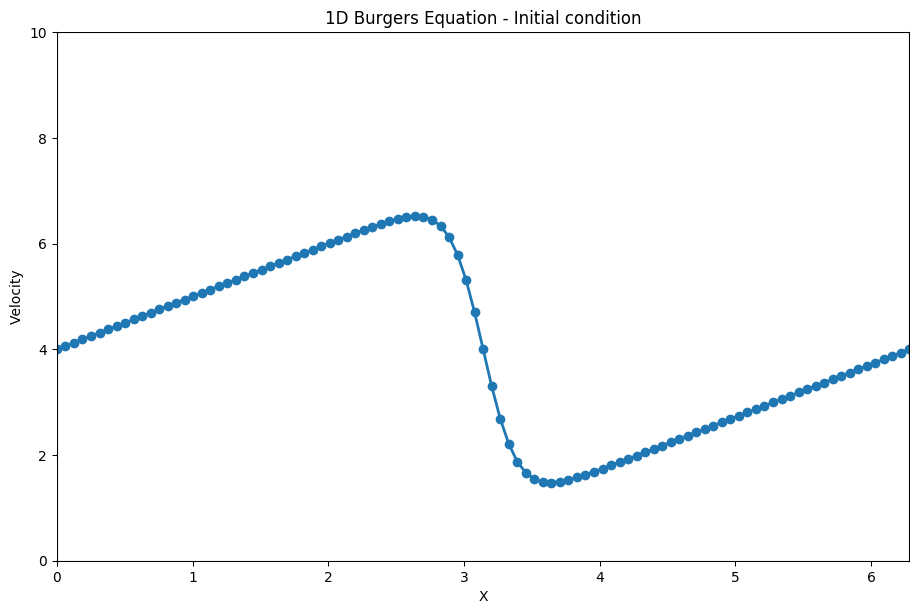
Erlaubte Funktion der Schallwelle mit nichtlinearem Verhalten.
Frequenzvielfache treten auf.
Anwendung bei Ultraschall
Hohe Frequenzen (Ultraschall) haben eine starke Richtcharakteristik.
Ultraschall benötigt hohe Energie bei der Ausbreitung in Luft.
Konsequenz:
Nichtlinearität liegt nutzbaren Anwendungen zugrunde.
Ultraschall zu Hörschall
Amplituden Modulation wandelt Ultraschallfrequenzen zu hörbaren Schall.
Prinzip AM
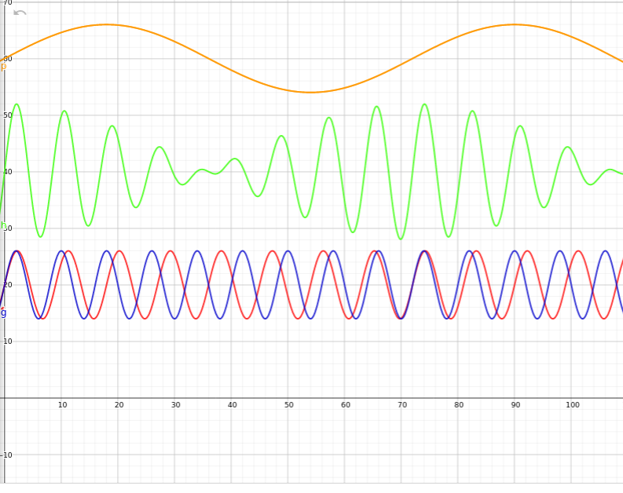
Es bildet sich eine hörbare Differenzfrequenz zwischen beiden Ultraschallsignalen.
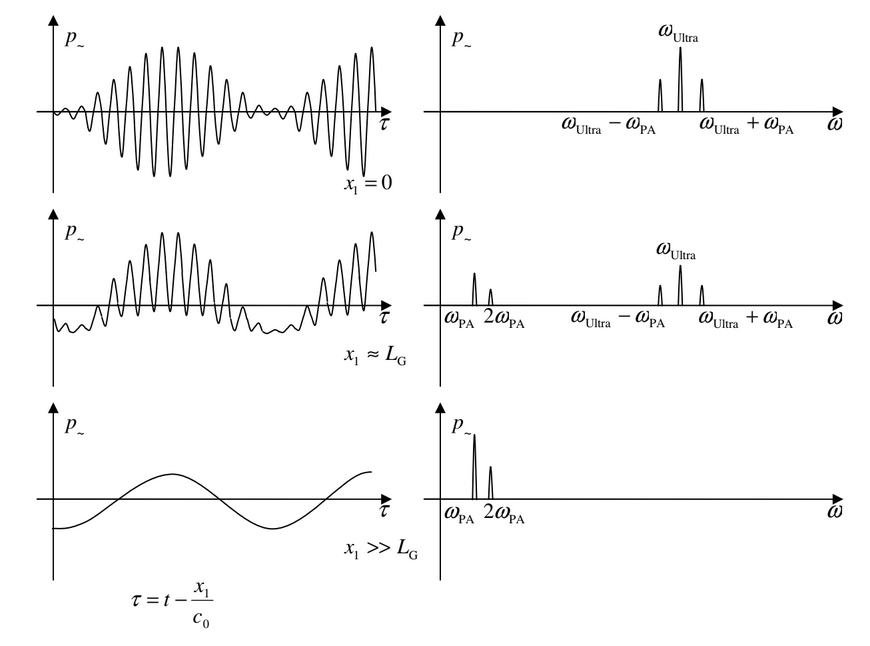
Einflüsse durch höherfrequente Komponenten verschwinden.
Das Signal wird geglättet - bzw. demoduliert.
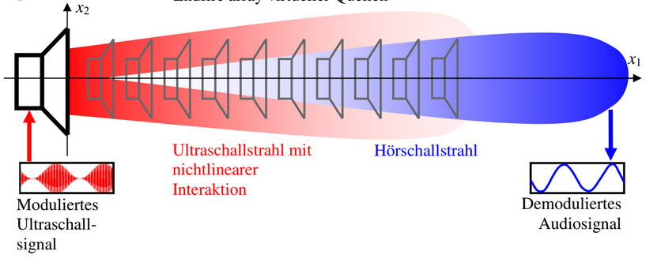
Hörbarer Schall entsteht nicht an der mechanischen Quelle, sondern nach einiger Distanz in der Luft.
Beispiel: Parametrisches Array
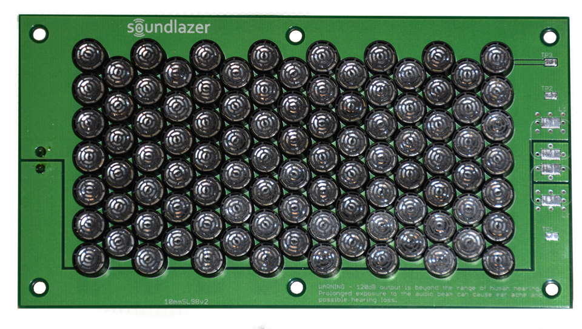
Technische Anwendung der
Nutzbarmachung der Nichtlinearität.
Fazit
Die Nichtlinearität der Luft kann genutzt werden
um Frequenzen aus dem Ultraschallbereich
für besondere hörakustische Anwendungen zu verwenden.
Danke für die Aufmerksamkeit
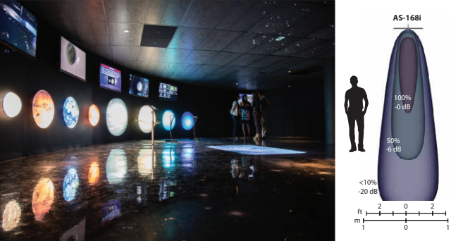
Weiterführende Links
Framework für Schallausbreitung
Matlab-plugin für Ultraschall
Hersteller von Richt-Lautsprechern
Bei weiteren Fragen:
hermannschris@googlemail.com
Quellen
Page 3: Dan Russel(2016) - Longitudinal and Transverse Wave Motion abgerufen 30.01.20
Page 4: Youtube - MED El (2013) - Understanding Sound Waves abgerufen 30.01.20
Page 5: Dominik Surek, Silke Stempin(2014) - Grundlagen der Strömung in Turbomaschinen P. 405
Page 6: HausTechnik Dialog - Lärm abgerufen 30.01.20
Page 8 - 9: Pierre-Oliver Vanberg, Martin Lacroix, Tom Servais (2019) - Multiphysics Integrated Computational Project
{kind=link}
Page 13, 18: Youtube - Finite Elemete Method Loudspeaker bgerufen 30.01.20
Page 16, 17: Holosonics - Directivity Demonstrations abgerufen 30.01.20
Page 14: Pierre-Oliver Vanberg, Martin Lacroix, Tom Servais - DGFEM for Acoustic Wave Propagation(Repository) abgerufen 30.01.20
Page 11, 21, 26, 27: Dirk Olszweksi (2008) - Stark gerichtete Audio-Beschallung mit parametrischem Ultrschall-Lautsprecher P. 28, 49, 51
{kind=link}
Page 23 Python 3.7.4 - Christoph-A. Hermanns (2020) n. 1D Burgers Equation - cfdmoments.blogspot.com abgerufen 30.01.20
Page 25 Geogebra - Christoph-A. Hermanns (2020) - Skizze nichtlineare AmplitudenModulation abgerufen 30.01.20
Page 28 soundlazer.com - 98 Large Ultrasonic Speaker Array - abgerufen 30.01.20